Front matter
lang: ru-RU
title: Презентация по выполнению лабораторной работы №4
subtitle: Основы информационной безопасности
author:
- Паращенко А.Д.
institute:
- Российский университет дружбы народов, Москва, Россия
date: 23 сентября 2024
i18n babel
babel-lang: russian
babel-otherlangs: english
Fonts
mainfont: PT Serif
romanfont: PT Serif
sansfont: PT Sans
monofont: PT Mono
mainfontoptions: Ligatures=TeX
romanfontoptions: Ligatures=TeX
sansfontoptions: Ligatures=TeX,Scale=MatchLowercase
monofontoptions: Scale=MatchLowercase,Scale=0.9
Formatting pdf
toc: false
toc-title: Содержание
slide_level: 2
aspectratio: 169
section-titles: true
theme: metropolis
header-includes:
- \metroset{progressbar=frametitle,sectionpage=progressbar,numbering=fraction}
- ‘\makeatletter’
- ‘\beamer@ignorenonframefalse’
- ‘\makeatother’
Цель работы
Получение практических навыков работы в консоли с расширенными атрибутами файлов.
Выполнение лабораторной работы
- От имени пользователя guest определяем расширенные атрибуты файла /home/guest/dir1/file1 командой lsattr /home/guest/dir1/file1
(рис.[1])
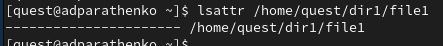
- Установливаем командой chmod 600 file1 на файл file1 права, разрешающие чтение и запись для владельца файла.(рис.[2])
- Пробуем установить на файл /home/guest/dir1/file1 расширенный атрибут a от имени пользователя guest: chattr +a /home/guest/dir1/file1
В ответ получили отказ от выполнения операции(рис.[3])
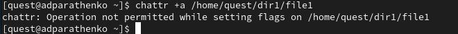
- Заходим на вторую консоль и повышаем свои права с помощью команды sudo. Установливаем расширенный атрибут a на файл /home/guest/dir1/file1 от имени суперпользователя: chattr +a /home/guest/dir1/file1 (рис.[4])
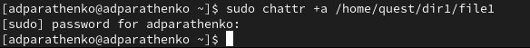
- От пользователя guest проверяем правильность установления атрибута: lsattr /home/guest/dir1/file1 (рис.[5])
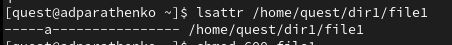
- Выполняем дозапись в файл file1 слова «test» командой echo “test” /home/guest/dir1/file1
После этого выполняем чтение файла file1 командой cat /home/guest/dir1/file1
Убедимся, что слово test было успешно записано в file1. (рис.[6])
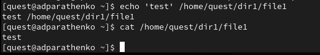
- Попробуйте удалить файл file1 либо стереть имеющуюся в нём информацию командой echo “abcd” > /home/guest/dirl/file1
Пробуем переименовать файл(рис.[7-9])
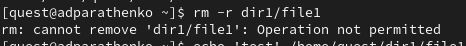
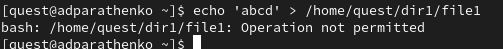
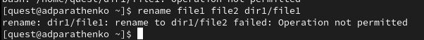
- Пробуем с помощью команды chmod 000 file1 установить на файл file1 права, запрещающие чтение и запись для владельца файла. Не удалось выполнить указанные команды.(рис.[10])
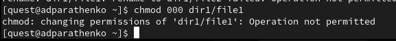
- Снимаем расширенный атрибут a с файла /home/guest/dirl/file1 от
имени суперпользователя командой sudo chattr -a /home/guest/dir1/file1 (рис.[11])
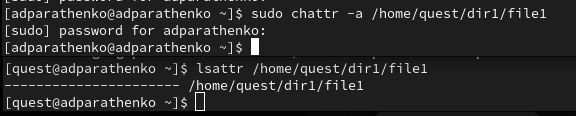
И повторяем операции, которые ранее не удавалось выполнить. Теперь мы можем выполнить операции. (рис.[12])
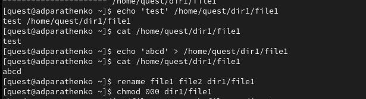
- Повторяем наши действия по шагам, заменив атрибут «a» атрибутом «i». командой sudo chattr +i /home/guest/dir1/file1 (рис.[13-14])
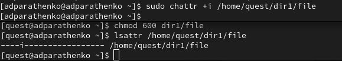
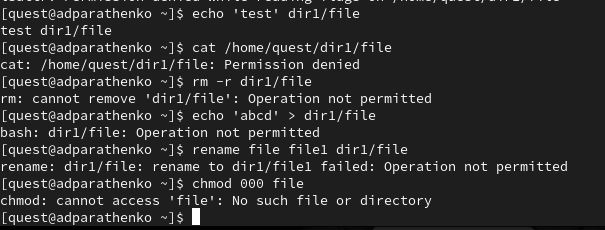
В данном случае в файл можно было только записать, а изменить/прочитать, переименовать и изменить его атрибуты - нельзя.
Вывод
В результате выполнения работы я повысила свои навыки использования интерфейса командой строки (CLI), познакомилась на примерах с тем, как используются основные и расширенные атрибуты при разграничении доступа. Имела возможность связать теорию дискреционного разделения доступа (дискреционная политика безопасности) с её реализацией на практике в ОС Linux. Опробовала действие на практике расширенных атрибутов «а» и «i».
Список литературы{.unnumbered}
- https://esystem.rudn.ru/pluginfile.php/2357151/mod_resource/content/3/004-lab_discret_extattr.pdf
::: {#refs}
:::